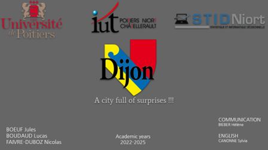
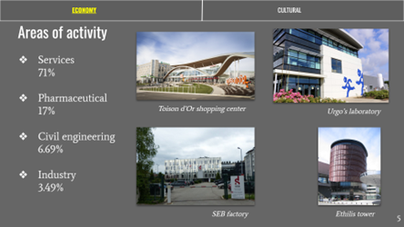
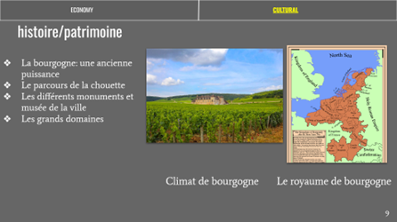

Présentation en anglais d’un territoire économique et culturel
Le projet consistait à présenter la commune de Dijon sous son aspect économique, puis culturel sous forme de présentation, et la première partie de l’exposé devait être faite en anglais. Nos recherches se sont faites sur internet, notamment sur le site de la commune de Dijon pour obtenir des informations sur son patrimoine historique et les grandes entreprises étant installées là-bas, mais aussi sur le site de l’INSEE afin de pouvoir trouver des informations démographiques et des indicateurs économiques sur la ville.
La présentation a été créée sur PowerPoint, en respectant les règles d’une présentation diaporama à l’université. Pour la partie anglaise, nous nous sommes aidés de nos connaissance personnelles sur la langue, mais aussi de l’aide de notre professeure d’anglais, et d’un traducteur en ligne lorsque nous n’arrivions pas à trouver la traduction d’un mot.
Compétences acquises :
- Utilisation de PowerPoint
- Recherche d’informations et de données sur le web
- Amélioration de mes connaissances en anglais
Illustrations



Extraits du diaporama